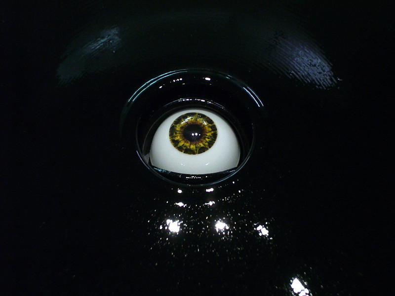

Opto-Isolator es un proyecto llevado a cabo el año 2007 por Golan Levin y Greg Baltus, este parte de la pregunta “¿Qué pasaría si las obras de arte pudieran saber cómo las estamos mirando? y, en ese caso, ¿Cómo podrían respondernos?”.
Se nos presenta la instalación de un único ojo parpadeante mecatrónico que pretende imitar a un ojo humano, tanto en forma y tamaño, siendo a escala, este reacciona a la mirada del visitante y sus movimientos con una variedad de comportamientos psicosociales los cuales son familiares y desconcertantes.
Esta estructura mira directamente a los ojos del espectador, pareciendo estudiarlo pero, si se le mira durante mucho tiempo, este mirará al otro lado de forma tímida, además de parpadear exactamente un segundo después que el visitante.
Actualmente existen 2 versiones de este proyecto, el Opto-Isolator I y el segundo con el mismo nombre, Opto-Isolator II.
